Get started · install, then climb one rung at a time
Start with one command. Climb as far as you need.
agentstack is adopted in six rungs, the same six the home page lists. Each pays off on its own, and nothing later is required to keep the earlier wins. This page walks them in order — rung 1 is the whole first session, and you can stop there.
Import your CLIs into one manifest, render it back to all of them, check it landed, and undo it. That is first value; steps 2–5 below are the whole of it.
Rungs 2–5 (switch by task, diagnose, recover, share) are the everyday tool. Rung 6 — trust, policy, confined runs — is for repos you didn't write, and only its last two steps want Docker.
-
Install the binary
The installer downloads the release tarball for your platform and verifies it against the
checksums.txtpublished with the release before installing. One static binary, no runtime dependencies.curl -fsSL https://raw.githubusercontent.com/Tarekkharsa/agentstack/main/install.sh | sh
Prefer to build it yourself? From a checkout:
cargo build --release, then./target/release/agentstack self linkto put it on yourPATH. Release binaries compile in sandbox support (step 12'srun --sandbox); a barecargo buildneeds--features sandbox.You should see
$ agentstack --version agentstack 0.17.x
Rung 1 · Unify · steps 2–5
Unify the stack you already have
~5 minutes · no Docker · ends with every CLI in sync — and reversible.

The whole track, condensed from a real run: import once → both CLIs in sync → clean doctor → fully reversible. Reproduce it fenced: examples/first-value-demo/run-demo.sh.
-
Import what's already there
agentstack initis the guided first setup. It opens with a plan and writes nothing until you confirm it, then finds the agent CLIs already on this machine and collects their setup into one place. Press Enter at every prompt and you get the defaults this page follows.agentstack init
You should see
$ agentstack init AgentStack setup Setup will: 1. detect the agent CLIs on this machine 2. import their existing configs 3. lift any inline tokens to ${REF} placeholders 4. write one agentstack manifest · The import step writes only the manifest and lifted token values — and only after you confirm it. No manifest here yet — importing the setup already on this machine. 🔍 Found 2 coding tool(s) and their native configs: Claude Code ~/.claude.json · ~/.claude/settings.json Codex CLI ~/.codex/config.toml 📥 Importing 1 MCP server(s) from those configs: github runs npx -y github-mcp 🔐 Found 1 plaintext token(s) in your live CLI configs — lifted to secure references: ${GITHUB_TOKEN} server 'github' (env GITHUB_TOKEN) The manifest stays commit-safe; real values resolve locally at apply time. 📦 Files agentstack will manage: .agentstack/agentstack.toml the manifest — written by this import .mcp.json Claude Code · MCP servers (this project) .codex/config.toml Codex CLI · MCP servers (this project) Native files are written by the next `agentstack apply --write`, not now. Import this into one manifest now? Only the manifest and any lifted token values are written — your CLIs' own configs stay untouched until the later apply confirm. [y/N] y ? Where should these token values live? › ❯ Project .env (default) — plaintext file next to the manifest, gitignored, guard-blocked macOS keychain — migrated into the system keychain (service `agentstack`) Skip / decide later — write only ${REF} placeholders; nothing runs until provided 🔑 Stored 1 token(s) in .env (gitignored) ✅ Wrote .agentstack/agentstack.toml ✓ Manifest validates Delivery mode · how capabilities reach your CLIs — switch later. ? Pick a delivery mode › ❯ static — config files on disk, kept out of git clean-at-rest — active only while you work, then restored zero-files — nothing on disk — served live to your CLIs after reviewWhat it left behind
Plain files in your project, which you can open, read, and commit:
your-project/ ├── .agentstack/ │ ├── agentstack.toml # everything your tools may run: servers, skills, instructions │ └── .env # token values lifted out of your configs (only when init found any) └── .gitignore # one managed line, so that .env is never committed
.agentstack/agentstack.tomlis the one file you edit from now on. It is called the manifest, and every CLI-specific file agentstack writes is rendered from it — that is the next step. It holds${GITHUB_TOKEN}-style placeholders, never the token values themselves: those went to the gitignored.envyou just chose.Press Enter for static — config files on disk, kept out of git. It is the right default for a first project and the one this page follows.
The other two modes exist; you do not need them yetClean-at-rest renders nothing and activates a toolset only between
session startandsession end(step 6 teaches that rhythm). Zero-files writes nothing ever and serves trusted repos live through the gateway (step 8). Switch whenever you have a reason — which mode do I need? decides it in two tables. -
Render it into every CLI
The static default. On clean-at-rest and zero-files nothing is rendered here — step 6 and step 8 cover those rhythms instead.
applypreviews each CLI's changes in its native format and writes them on confirmation. The manifest keeps${REF}placeholders (safe to commit); a native config whose format needs the real value receives it resolved at write time — the rendered files sit behind a managed gitignore. Skills activate through toolsets, notapply—agentstack use <toolset> --writematerializes them (applyreminds you).agentstack apply --write
You should see
$ agentstack apply --write Claude Code + .mcp.json ✓ wrote 1 server Codex CLI + .codex/config.toml ✓ wrote 1 server Cursor + .cursor/mcp.json ✓ wrote 1 server instructions → CLAUDE.md + AGENTS.md ✓ compiled -
Check it landed
agentstack statusis the one screen: which CLIs were found, what the manifest holds, whether secrets resolve, and the single next step. Run it from any directory — with no manifest it tells you to runinit; with one, it tells you whether you are done.agentstack status
You should see
$ agentstack status agentstack 0.17.0 — one portable manifest, every agent CLI CLIs 6 detected: Claude Code · Codex CLI · Copilot CLI · Gemini CLI · … Manifest .agentstack/agentstack.toml — 2 server(s) → 2 target(s) Status locked · trusted Mode static — config files on disk, kept out of git Secrets 1 referenced, all resolve Next: everything is in sync — nothing to doWant the deep version — drift per CLI, launcher quirks, supply-chain scan? That is
agentstack doctor, and status links you to it. Rung 3 below is where it earns its keep. -
Take it back, any time
Every write agentstack makes is recorded as one revertible entry, so the question "what did this just do to my machine?" always has an answer and an undo. Without
--writeit is a dry run that names each file it would revert.agentstack restore --last # dry run: what undoing would touch agentstack restore --last --write # actually undo it
You should see
$ agentstack restore --last ↩ 18c66ebc (project, 6m ago) apply: 3 files · Claude Code, Codex CLI ✗ Claude Code · servers delete .mcp.json ✗ Codex CLI · servers delete .codex/config.toml ↩ .gitignore · managed artifacts revert .gitignore Dry run. Re-run with --write to undo.Taking all of it off is
agentstack uninstall, which previews the same way. Full walkthrough: undo anything.
Your CLIs share one setup, you can tell whether it is healthy, and you can put the machine back. Everything below is optional and each rung stands on its own; come back for the next one when you feel the need it answers.
Rung 2 · Switch · step 6
Switch by task, not by editing five config files
~2 minutes · the reason this becomes a daily tool rather than a one-time import.
-
Name a toolset, then switch to it
A toolset is a named subset of what you just imported —
backend,incident,design. Naming one changes nothing on disk;useactivates it, rendering that subset's servers and materializing its skills while pruning the ones it owns.agentstack toolset create --name backend --server github # name it (writes the manifest, renders nothing) agentstack use backend --write # switch to it agentstack use --list # every toolset here, and whether each is ready
For a toolset you want only for now, start a session instead: the previous native files come back when you end it, so nothing permanent is left behind.
agentstack session start backend # load it for this piece of work agentstack session end # put every file back
This is what clean-at-rest mode automatesPick clean-at-rest at
initand this session rhythm becomes the default: nothing generated exists betweensession startandsession end, so the repo stays pristine for git. Same commands, no rendered files at rest.Full walkthrough, including which capabilities a toolset may hold: name a toolset.
Rungs 3–5 · when the setup starts moving
Diagnose · Recover · Share
Three rungs you climb the first time something drifts, someone hand-edits a rendered file, or a teammate needs the same setup. Each is a short how-to rather than a step here.
3 · Diagnose — doctor and diff
agentstack doctor checks adapters, secrets, drift, skills
and supply chain, and names the exact fix for each warning;
agentstack diff shows the consequence before anything
changes. Nothing is written by either.
4 · Recover — adopt, apply, restore
Someone hand-edited a rendered config. adopt pulls that
edit back into the manifest if it was intentional;
apply --write re-asserts the manifest if it wasn't;
restore reverts one recorded write.
5 · Share — lock, library, export
Commit the manifest and agentstack.lock — both hold
${REF} placeholders, never secret values, so each machine
supplies its own. The central
library reuses one skill across projects by name.
Rung 6 · Govern · steps 7–13
Govern work you didn't write
~10 minutes · Docker only for the confined run near the end.
Rungs 1–5 leave every CLI unified, switchable, diagnosable and shareable. This rung is what you add when an agent can do damage by accident, or when a repo you cloned declares MCP servers you have never read. Step 7 alone is worth doing on any machine.
Walk the seven steps — guard · gateway · inert clone · trust · secrets · confined run · evidence
-
Wire the guardrails
One command hooks a cooperative pre-tool-use check into every hook-capable CLI: destructive commands (
rm -rfoutside the workspace,git reset --hard) and reads of[policy.filesystem]deny-globs like.envare blocked before they land, each denial recorded. It catches an agent's accidents, not a determined attacker — kernel-enforced confinement is step 12. What each layer enforces.Machine-level, so it applies to every project and whichever delivery mode you picked.
agentstack guard install
You should see
$ agentstack guard install ✓ wired: Claude Code · Codex · Gemini · Cursor · Windsurf · +4 🛡 deny list seeded — rules are TOML in ~/.agentstack/agentstack.toml; projects can add, never remove agent → rm -rf /opt/acme/data ✗ blocked destructive, outside the workspace agent → cat .env ✗ blocked [policy.filesystem] deny globWant to see a denial without involving an agent?
agentstack guard test rm -rf /judges any command against the current guard policy and exits nonzero on deny.agentstack guard statusshows which CLIs are wired. -
Register the gateway, once
One registration teaches every installed CLI to reach its MCP servers through agentstack instead of directly — no files copied into any repo; the gateway serves each project live, behind the trust gate you meet next. Without
--write,connectis a dry run showing the exact config diff.agentstack gateway connect --all # dry run: shows what would change agentstack gateway connect --all --write # write it into each harness's global MCP config
Undo any time with
agentstack gateway disconnect; verify withagentstack doctor. -
Clone a repo — and watch it stay inert
Grab any repo that ships its own agent setup. (No repo in mind? The runnable
docs/trust-gate-demo.shbuilds a tiny one.) Before you review it, ask an agent what it can use here — the answer is nothing: no server spawned or contacted, no secret resolved, no skill in context. That inert-until-trusted invariant is property-tested in the trust crate.You should see
$ git clone https://github.com/some/agent-repo && cd agent-repo $ agentstack mcp --auto-project # an agent asks: which project servers can I use? ✗ untrusted — no servers spawned, no secrets resolved, nothing in context -
Review what it declares, then trust it
trust .shows exactly what the repo declares — the servers it would spawn and the commands behind them — before you authorize anything, then pins a content digest so any later edit re-gates the repo. Read any referenced script as part of the review, the way you'd read a.envrcbeforedirenv allow. Full walkthrough: trust a cloned repo; the exact scope of the pin: what trust does & doesn't.agentstack trust .
You should see
$ agentstack trust . ▶ demo: runs `python3 ./server.py` # exactly what it would run machine policy ceiling: ~/.agentstack/agentstack.toml — the repo can only narrow it, never loosen it ✓ trusted at sha256:945b4b… # editing the manifest re-gates itNow the same
agentstack mcp --auto-projectserves the repo's servers live — every brokered call passes two firewall layers (the repo's[policy.tools]and your machine rules, which no repo can loosen) and lands in~/.agentstack/audit/calls.jsonl.Optional: fence one toolset, no project filesInside the agent session, call
agentstack_lease_open({ "profile": "backend" })— that MCP connection then sees only the toolset's servers and loadable skills.agentstack_lease_statusinspects it,agentstack_lease_close(or ending the process) drops it; it's process-local, nothing to restore. Complete example. -
Store any secret it needs — in your keychain
If the repo references a token (a
${REF}), store it once — into your OS keychain, never the manifest or any committed file. Resolution is fail-closed: an unresolvable secret blocks the write or run rather than leaking a placeholder into live config (the secrets chain).agentstack doctor # names any missing secret agentstack secret set GH_PAT # store it in the OS keychain
agentstack doctorconfirms every server, skill, and secret is wired up, and names the exact fix for anything that isn't. -
Run it confined — needs Docker
The trust gate decides what the agent may do;
run --sandboxdecides what it can do — the harness runs in a container whose egress is filtered by your machine[policy.egress], and--lockdownmakes the egress-proxy sidecar its only network peer, so ignoring the proxy reaches nothing. Preview with--plan, then launch. Full guide: lock down a run.Prerequisites for this stepDocker installed and running. The container runs your harness, so
--sandboxneeds a runner image that carries it — build one fromdocker/sandbox.Dockerfileand pointAGENTSTACK_SANDBOX_IMAGEat it. The--lockdownegress sidecar needs no setup: each release publishes it to GHCR and the binary pulls the version-pinned tag on first use.agentstack run claude-code --sandbox --lockdown --plan # preview posture + enforcement agentstack run claude-code --sandbox --lockdown # launch confined
You should see
$ agentstack run claude-code --sandbox --lockdown ▲ LOCKDOWN / ENFORCED · NO DIRECT ROUTE # the posture, once, up front container on an internal-only network → sole peer is the egress proxy ✓ api.anthropic.com:443 allowed by [policy.egress] — recorded ✗ evil.example.com:443 denied — no such host in policy — recordedRunnable end to end (needs Docker):
examples/sandbox/demo-lockdown.sh.Honest scope: hosts you allow stay reachable. agentstack restricts destinations and records every decision; it doesn't inspect payloads, so the claim is unapproved egress is blocked, never "exfiltration is impossible." The enforcement matrix states every limit.
-
Read the flight recorder
Nothing trusted runs unobserved. A sandbox run fails closed if its log can't be created; that log captures the container lifecycle, egress decisions, brokered calls, and secret-reference names, tagged with the run's posture — never argument or secret values.
agentstack report run <run-id>reads it back.agentstack report run <run-id> # that run's decisions agentstack report run <run-id> --json # machine-readable, carries the posture slug
You should see
$ agentstack report run r-0859dcee73 run 2026-07-11T… posture: LOCKDOWN / ENFORCED · NO DIRECT ROUTE ├─ SandboxStarted image=… network=internal-only ├─ egress ✓ api.anthropic.com:443 allowed ├─ egress ✗ evil.example.com:443 denied └─ SandboxExited code=0Ran in host or gateway mode? No flight recorder, but every brokered call is still in the call audit log —
~/.agentstack/audit/calls.jsonl, one line per call (tool · outcome · latency), an argument digest only, never raw values or secrets. What each mode records today, and what isn't yet wired in: the enforcement matrix.
Where to go next
You've climbed the ladder. Here's the rest.
The Protected tier — run --locked
No Docker, still fail-closed: trust, strict lock verification (a
one-byte edit to a pinned executable refuses the run), and policy
admission gate the launch; the MCP surface is frozen, every decision
recorded, --plan previews it.
What's enforced where
The compact, code-grounded matrix: host / gateway / sandbox / lockdown against tools, egress, secrets, filesystem, and audit — enforced, coarse, or unsupported.
Render config for 13 CLIs
Prefer native config files over the live gateway?
init → apply turns one manifest into the native setup for
Claude Code, Codex, Cursor, and ten more — the committed manifest holds references, never values.
Central library
Install a skill or server once into your machine-wide library, then reference it by name from any project — no copying files between repos, every add content-scanned first.
Feature reference
The complete tested inventory — machine-policy presets, vendor packs,
the MCP firewall, optimize, extensions, live runs, code
mode, every command and flag.
Enforcement matrix (full)
The authoritative, per-cell source — checked against the code, with the claim-discipline ceiling stated up front and every mechanism named.
Integrations
Use AgentStack from t3code and other graphical launchers — the current contract, native panel direction, and honest limits. The CLI still owns every plan, write and safety decision.